Himeji, Hyogo: things to do, food and stays
Himeji · Hyogo
Himeji
Highlighted on the Hyogo map.
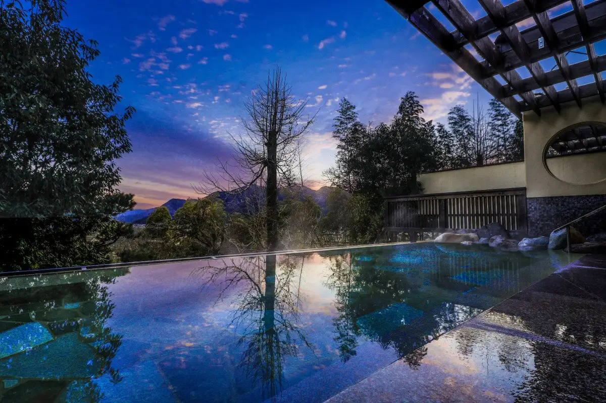
Stay
夢乃井庵 夕やけこやけ
Yumeno I Iori Yu Yakekoyake
Inn in Yumesaki, Himeji with open-air baths.
ホテル日航姫路
Hotel Nikko Himeji
ホテルモントレ姫路
Hotel Montore Himeji
セトレハイランドヴィラ
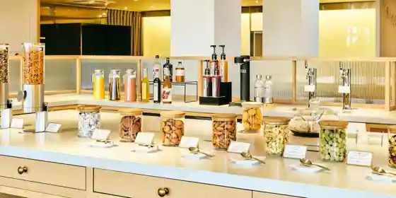
Setorehairando Villa
Inn in Komineyama, Himeji with private baths and scenic views.
ダイワロイネットホテル姫路
Daiwaroinetto Hotel Himeji
塩田温泉旅館 湯元うえやま
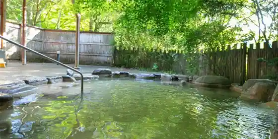
Shioda Onsen Ryokan Yumoto Ueyama
Ryokan inn at Shioda Onsen in Yumesaki, Himeji.
夢乃井
Yumeno I
Inn at Yunikutsurogushioda Onsen in Yumesaki, Himeji.
天然温泉 華楽の湯 姫路キヤッスルグランヴィリオホテル -ルートインホテルズ-
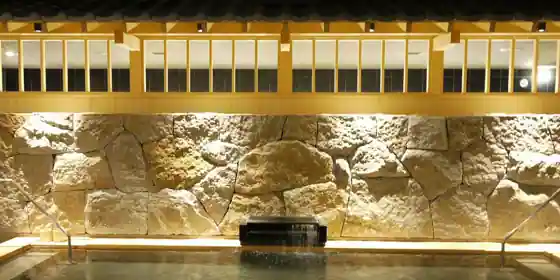
Tennen Onsen Hana Raku No Yu Himeji Kiyassuruguranvirio Hotel - Route Inn Hotels
天然温泉 白鷺の湯 ドーミーイン姫路
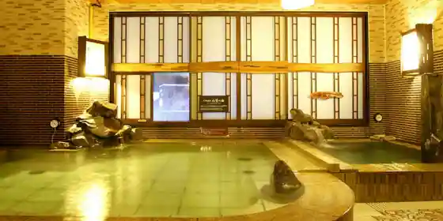
Tennen Onsen Shirasagi No Yu Dormy Inn Himeji
Inn in Toyosawa, Himeji with a sauna and a large communal bath.
KOKO HOTEL 姫路城
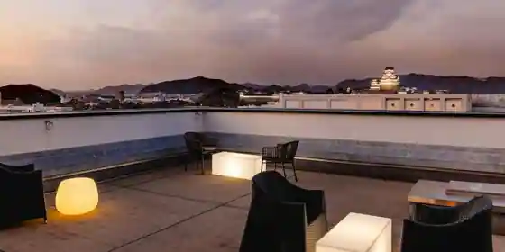
KOKO HOTEL Himejijo
リッチモンドホテル姫路
Ritchimondo Hotel Himeji
Hotel in Nanpo, Himeji with buffet meals and breakfast available.
コンフォートホテル姫路
Comfort Hotel Himeji
Dining
淡流
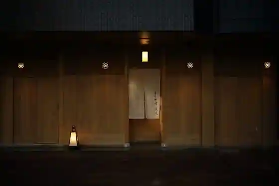
Tan Ryu
ベーカリー燈
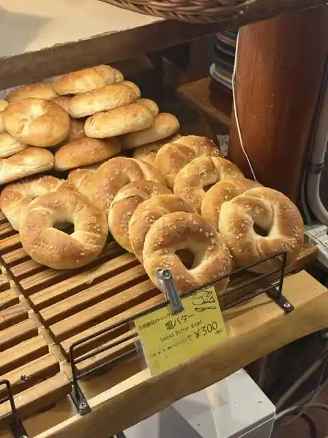
Bakery To
はまもとコーヒー
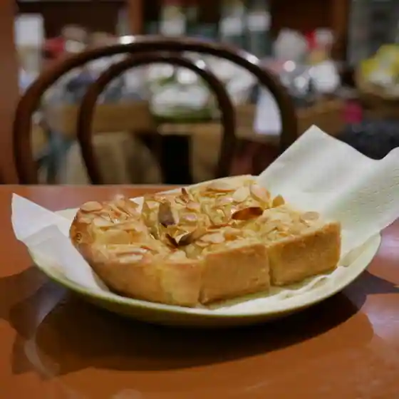
Hamamoto Coffee
カフェドムッシュ 姫路店
Cafe Domusshu Himeji
とんかつ朔
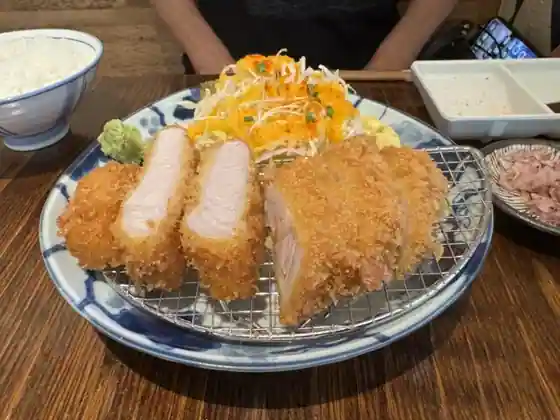
Tonkatsu Saku
新生軒
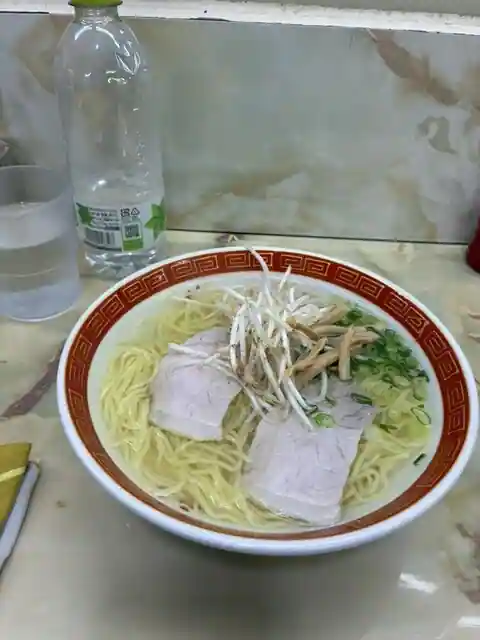
Shinsei Ken
淡州
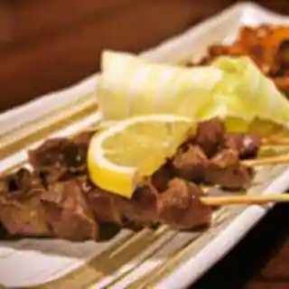
Tan Shu
英洋軒 姫路駅前店
Hidehiro Ken Himejieki Mae
姫路タンメン
Himeji Tanmen
鯛焼本舗 遊示堂 東駅前店
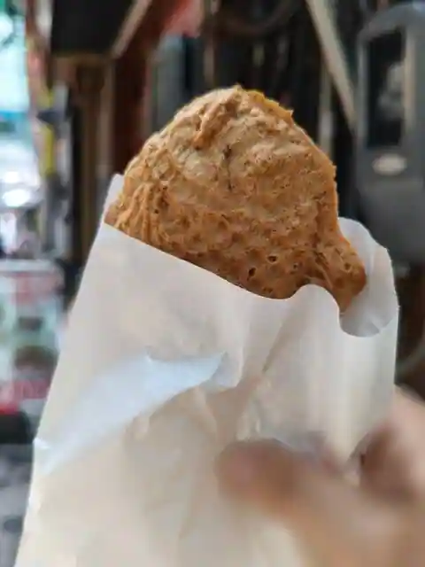
Taiyaki Honpo Yu Ji Do Higashieki Mae
姫路麺哲
Himeji Men Satoshi
Ramen Masamasa
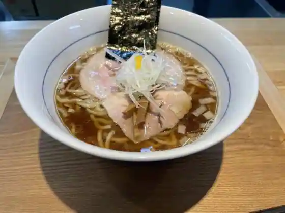
Ramen Masamasa
麺屋 甚八 野里店
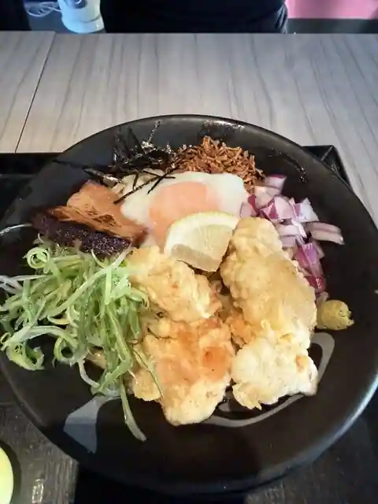
Men Ya Jinpachi Nozato
エグレット
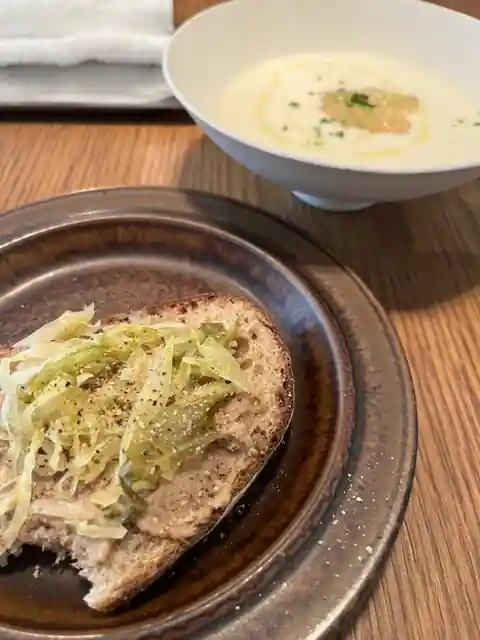
Eguretto
魚路
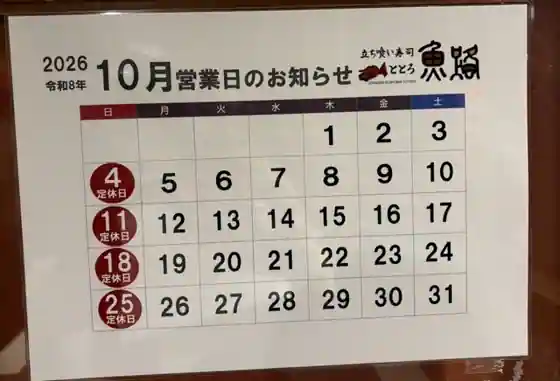
Sakana Michi
たち花
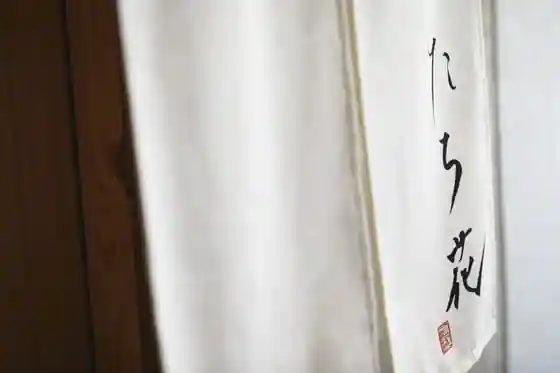
Tachi Hana
麺家 本倉
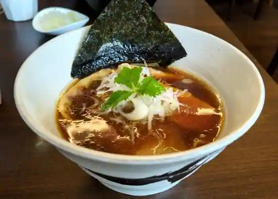
Men Ie Hon Kura
マルフク
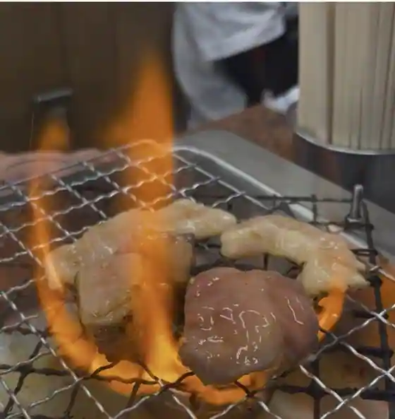
Marufuku
未十
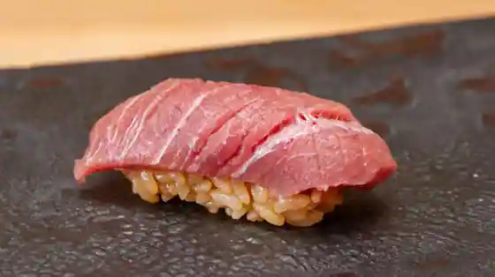
Hitsuji Ju
料理旅館 おかべ
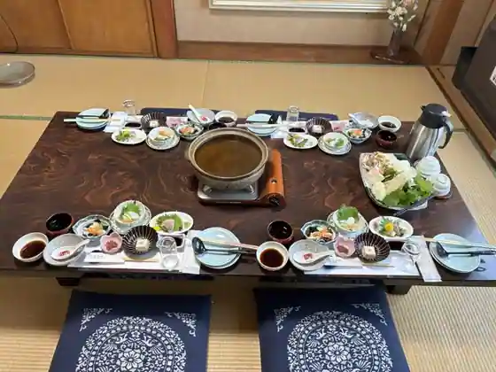
Ryori Ryokan Okabe
さゝま
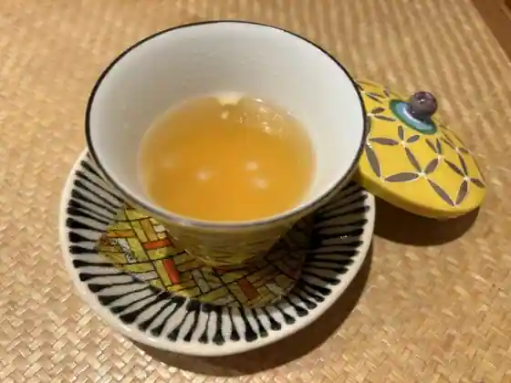
Sa Ma
天然氷のかき氷 ひめじ官兵衛堂
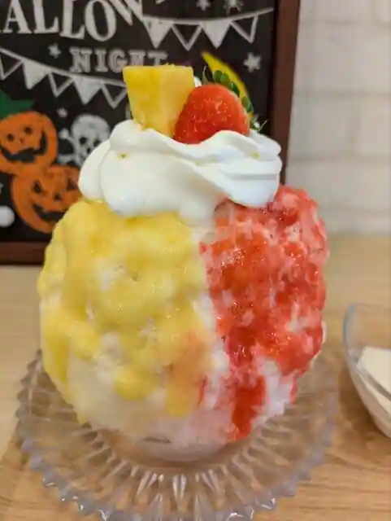
Tennen Kori Nokaki Kori Himeji Kanbe Do
マーガレット スプーン
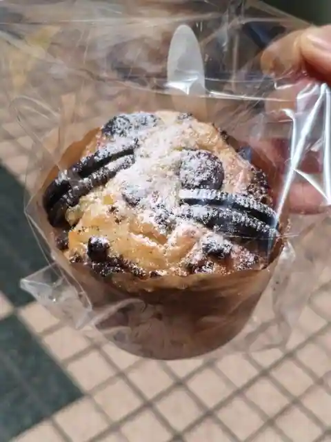
Magaretto Supun
Sights
Yamasa Kamaboko Kamaboko Kobo Yume Sen Kan
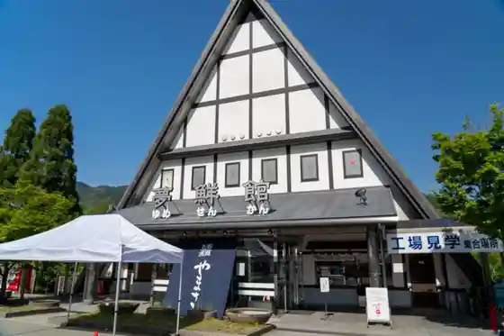
Shioda Onsen
Taiyo Park
Koko Sono
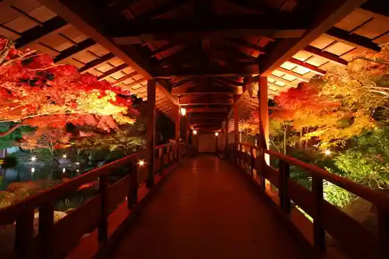
Himeji Sentoraru Park
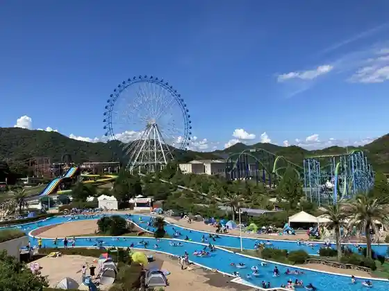
Himeji Shiro
Ie Shima Sho Shima
Shosha Yama Engyo Tera (Shosha Yama Engyo Tera)
Teki Katachi Shiohigari Ba Beach